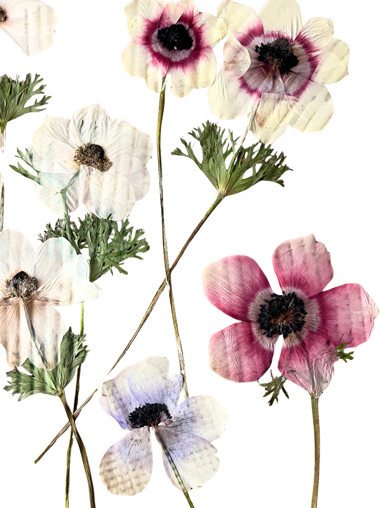
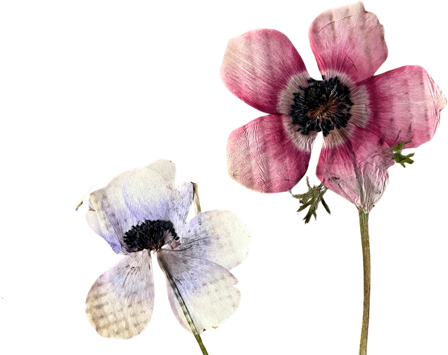
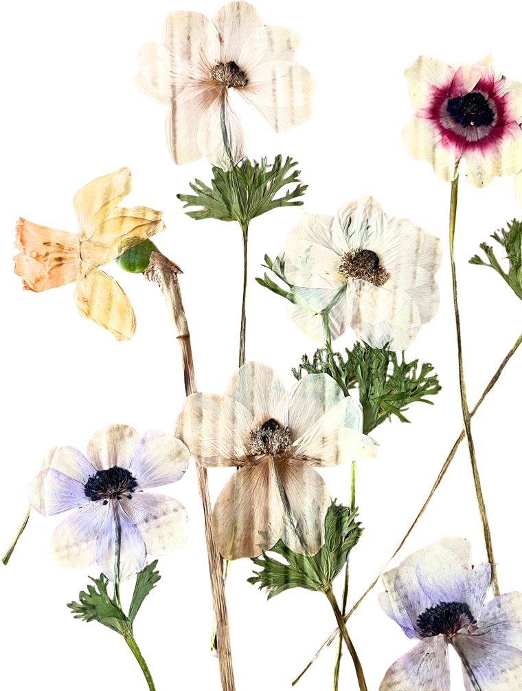
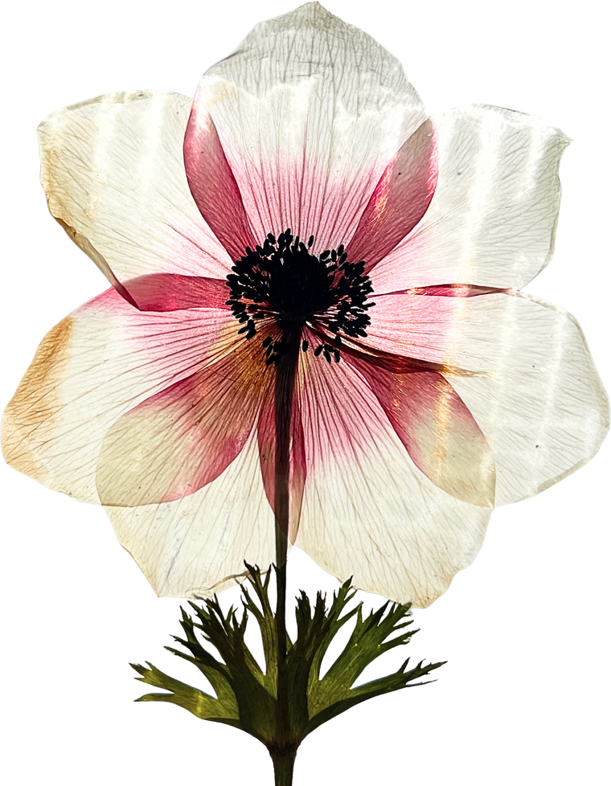
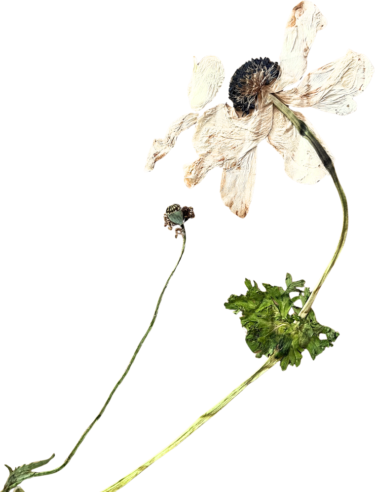

El cuaderno de Guguiarte
✦lo que escribo
El blog de referencia sobre flor prensada, arte floral consciente y slow flowers desde un huerto floral ecológico en Majadahonda (Madrid). Guías, técnicas y notas de temporada, escritas despacio y con las manos en la tierra.




Flor prensada
El método que uso en el taller: qué flores elegir, cómo prensarlas y conservarlas sin que pierdan color.

Talleres botánicos
Qué aprendes, qué te llevas y por qué lo hacemos en grupos reducidos en Majadahonda.

Del huerto & slow flowers
El movimiento que está cambiando el arte floral, contado desde mi huerto ecológico.

Calendario botánico
Un calendario para saber qué recolectar y prensar en cada momento del año.

Vida creativa consciente
Qué es el wabi-sabi y cómo esta filosofía japonesa transforma tu manera de crear.

Del huerto & slow flowers
Ideas sencillas para vivir más cerca de la naturaleza sin salir de tu hogar.

✳cartas,
Si quieres recibir el Blog en tu correo, te escribo de vez en cuando: calendario de talleres, reflexiones desde el huerto y notas de botánica estacional.